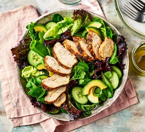

Air Fried Salmon
Salmon fillets cook beautifully in an air fryer and make a delicious meal when coated in a herb seasoning and served with greens and grainsr
Ingredients
- 1 tsp salt
- 1 tsp pepper
- 1 tsp mixed herbs
- 1 tablespoon garlic granules
- 4 Salmon fillets
- ½ tbsp olive oil
- 1/2 tablespoon pepper >
Steps
- Combine the salt, pepper, mixed herbs and garlic granules, if using, in a bowl, then scatter onto a plate. Rub each salmon fillet with a little olive oil and roll in the seasoning to coat.
- Put in the air fryer basket in one layer and cook at 180C for 8-10 mins, until cooked through. If you have larger salmon fillets they will need to be cooked for longer – keep checking after 10 mins and cook in 1-2 min blasts, until ready. Serve with greens and quinoa or rice, if you like.
Recipe source: www.bbc.co.uk